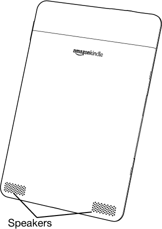
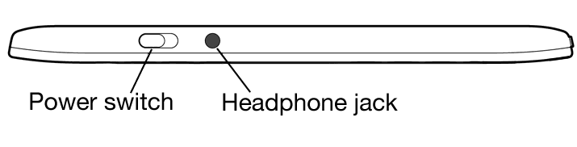
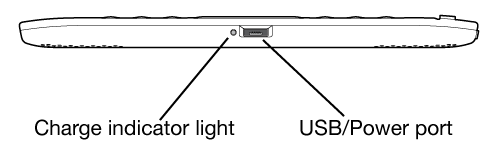
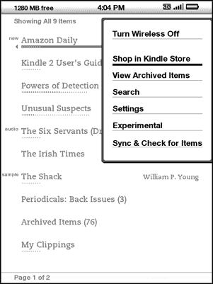
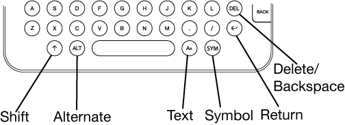
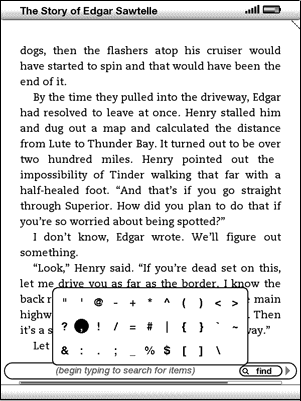

CHAPTER 1
Getting Started with Your Kindle
In the Welcome chapter of the Kindle User's Guide, you read about many of the things you can do with your Kindle. This chapter reviews all of the physical features of Kindle and covers the basics of using the Kindle buttons, menus, and keyboard.
1.1 Views of Kindle
Front View
The front of your Kindle contains the screen the keyboard, and the navigation controls. These features are illustrated below and explained in the list that follows.

Volume controls - controls the headphone or speaker volume for audiobooks, background music, and text-to-speech.
Previous Page button - takes you to the previous page in your reading material.
Home button - shows content stored on your Kindle as well as content archived at Amazon.
Next Page button - takes you to the next page in your reading material. To accommodate different ways of holding the Kindle, there is a Next Page button on both sides.
Menu button - displays application and navigation choices that are related to the screen you are viewing.
5-way controller - selects an item or action when pressed down. Moves the on-screen highlight or cursor up and down when moved up and down. Moves the on-screen highlight or cursor side-to-side when moved left or right.
Keyboard - use to enter search terms, notes in your content, URLs for Web sites, etc.
Back button - retraces your steps on Kindle just like the back button on a web browser. For example, you can follow a link in a book and then press the Back button to return to your place.
Symbol key  - presents a menu of punctuation marks and symbols. Move the 5-way controller to select the desired symbol and press the 5-way to select.
- presents a menu of punctuation marks and symbols. Move the 5-way controller to select the desired symbol and press the 5-way to select.
Text key - changes the size of the text while you are reading and presents available controls for Text-to-Speech. Move the 5-way controller to select the optimal text size or a Text-to-Speech action.

Back View
The back of your Kindle contains stereo speakers for audio content.

Top View

Power switch - puts your Kindle to sleep, wakes it up, and turns your Kindle on or off. To put your Kindle to sleep, slide and release the power switch; a full screen image appears on the display. While your Kindle is asleep, other keys and buttons are locked so that you don't accidentally change the place in your reading. To turn your Kindle off, slide and hold the power switch for four seconds until the screen goes blank and then release. To wake up or turn on your Kindle, slide and release the power switch again.
If your Kindle does not power on or is unresponsive during use, try resetting the device by disconnecting your Kindle from any power source, and then sliding and holding the power switch for 15 seconds before releasing.
 Tip: Your Kindle will also go to sleep by itself after ten minutes if you are not using it. If your Kindle had wireless on prior to going to sleep, it will continue to receive your regularly scheduled subscriptions while in sleep.
Tip: Your Kindle will also go to sleep by itself after ten minutes if you are not using it. If your Kindle had wireless on prior to going to sleep, it will continue to receive your regularly scheduled subscriptions while in sleep.
Headphone jack - plug in headphones to listen to an audiobook, background music, or content read aloud through text-to-speech. Attaching headphones turns off the built-in speakers.
Bottom View
The bottom of your Kindle contains the charge indicator light and a micro-USB port.

Micro-USB/power port - attach the USB cord that came with your Kindle into the micro-USB/power port and into the Kindle power adapter. Plug the adapter into a power outlet to charge the Kindle battery. The charging status light will turn yellow, indicating that the battery is charging; you can continue to use your Kindle while it charges. A green light indicates that the battery is fully charged.
Check to make sure the power adapter is not covered by anything that could cause it to overheat. If the charge indicator light does not light up, make sure that the USB cable is fully inserted into your Kindle and the power adapter. If Kindle still is not charging, try another electrical outlet.
 Tip: The Kindle power adapter is a universal power adapter and will work worldwide. If you are traveling outside the United States, and want to recharge your Kindle, connect the power adapter to a country-approved physical plug adapter (not included) for the country that you are in.
Tip: The Kindle power adapter is a universal power adapter and will work worldwide. If you are traveling outside the United States, and want to recharge your Kindle, connect the power adapter to a country-approved physical plug adapter (not included) for the country that you are in.
To transfer content between your computer and your Kindle, connect the provided USB cable to the Kindle and to the computer's USB port. If your computer's USB port or powered USB hub provides power, your Kindle will charge over USB.
1.2 Getting Around
To get around on your Kindle, you use the buttons, menus, and the keyboard-all of which are explained here.
Using the Buttons
In the Welcome section you learned about the navigation buttons (Previous Page, Next Page, and Back). For an explanation of what each button does, see Front View of Kindle.
Using the Menus
In addition to the physical buttons, you also navigate Kindle using the menus. Kindle's menus are context sensitive, but they all work the same way.
You use the 5-way controller to navigate within the menu and press the 5-way to select an item.
The illustration below shows the Home menu; the bold line under "Shop in Kindle Store" indicates that it is ready to be selected.

The Application Menu
You can display a menu from any screen on your Kindle. When you press the Menu button, it displays choices related to the screen you are viewing. The sample screen below shows you the screen you would typically see when you press the Menu button from within a book.

1.3 Entering Text
To use the Kindle keyboard, most people find it easiest to hold the device in both hands, and use the tips of their thumbs to press the keys.

Lowercase and Uppercase Letters
To enter lowercase letters, press the appropriate letter key. To enter uppercase letters, hold down the Shift key , and then press the desired letter key like you do on your computer keyboard. Alternatively, you can press and release the Shift key and then press the desired letter. Only the next letter will be capitalized.
Numbers, Punctuation, and Symbols
The number keys are located at the top of the keyboard. If you need a punctuation mark or a symbol that is not shown, press the Symbol key  on the bottom row of the keyboard. You will see a menu of punctuation marks and symbols.
on the bottom row of the keyboard. You will see a menu of punctuation marks and symbols.

Use the 5-way controller to choose the character you want and it will appear in your text entry box.
1.4 Status Indicators
At the top of every screen, you also see Whispernet and battery life status indicators to keep you in the know.
Whispernet Status Indicators
The Whispernet status indicator shows you whether the wireless radio is turned on or off, the signal strength of your Whispernet service, and the connection speed. Here are the possible indicators and their meanings.
The Whispernet service is active and your Kindle has a strong signal. The more bars that are filled in with black, the stronger the wireless signal.
None of the bars are filled in. This means the wireless signal strength is too low to connect. You will not be able to connect to the Kindle Store, Basic Web, register your device, retrieve content from Archived Items, or receive your subscriptions.
The bars are outlined in grey. This means Whispernet is checking for signal strength. This usually lasts less than 30 seconds.
The Whispernet service is turned off. You can turn on the wireless by pressing the Menu button, and using the 5-way controller to navigate to "Turn Wireless On."
When you activate a menu, a 1X or 3G icon appears to the left side of the signal bars that indicates the speed of your Whispernet service. The 1X icon indicates that your Kindle is connected to the 1XRTT wireless network, which is slower than the 3G Whispernet service. Kindle will automatically switch back to the faster 3G EVDO network when available.
Battery Status Indicators
You have your Kindle plugged into power and the battery is charging. The charge indicator light on the bottom of your Kindle also lights up. Note that if your Kindle is plugged into a low powered USB port such as those found on some keyboards or older computers, you will only derive enough charge to avoid depleting the battery but not enough to recharge it.
The images above show the various states of the battery as it discharges. As you deplete the battery, less of the battery indicator will be filled in.
The battery is too low to power the Whispernet service. You must charge your Kindle battery to restore wireless service.
Activity Indicator
Your Kindle is busy downloading new content, checking for new items, searching for an item, or loading a web page.